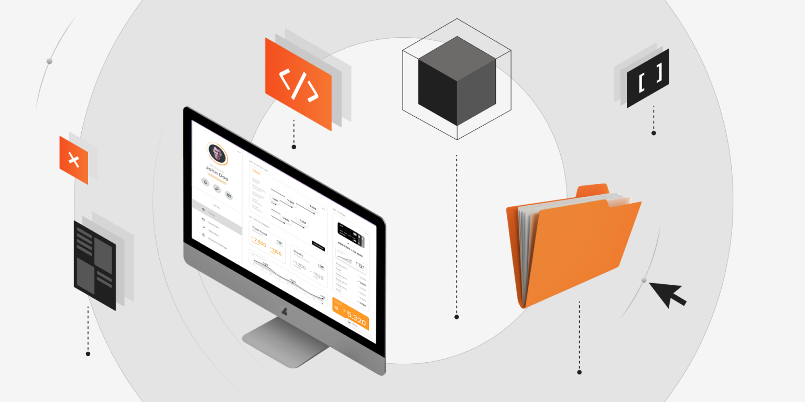

QA Automation, or Quality Assurance Automation, is the process of using specialized software tools to execute pre-defined test cases, identify bugs, and validate that a software product meets its requirements.
By automating repetitive and time-consuming tasks, QA teams can focus on higher-level testing strategies, improve test accuracy, and accelerate product delivery.
In today’s fast-paced development cycles, manual testing alone cannot keep up with the demand for faster releases and complex systems. QA Automation ensures:
Speed: Automated tests run faster and more efficiently than manual tests.
Consistency: Automated scripts perform tasks exactly as defined, reducing human error.
Scalability: Automation supports testing large-scale applications across multiple environments.
Cost Efficiency: While the initial investment may be higher, automation saves time and resources in the long run.
QA Automation leverages powerful tools and frameworks, such as:
Selenium: A popular open-source tool for web application testing.
Playwright: A modern tool for end-to-end testing with cross-browser support.
Cypress: Ideal for front-end testing with real-time feedback.
Appium: Designed for mobile application testing.
JUnit/TestNG: Widely used for unit testing and integration testing in Java projects.
Enhanced Productivity: Automating repetitive tests frees up testers to focus on exploratory and edge-case testing.
Improved Software Quality: Continuous testing ensures that bugs are identified and resolved early in the development cycle.
Seamless Integration: Works well with CI/CD pipelines to enable automated regression and continuous delivery.
As technology evolves, QA Automation is embracing advancements like Artificial Intelligence and Machine Learning, making it possible to create smarter, self-healing test scripts and predictive analysis of test results. Automation is no longer just an option—it’s a necessity for organizations seeking to deliver reliable and high-quality software at scale.
QA Automation is not just about tools and scripts; it's about creating a culture of quality. Whether you’re a software tester, developer, or project manager, embracing QA Automation can unlock new opportunities to innovate, reduce costs, and deliver exceptional user experiences.
Ready to take the leap into QA Automation? Explore the tools, learn the skills, and transform your testing approach today!